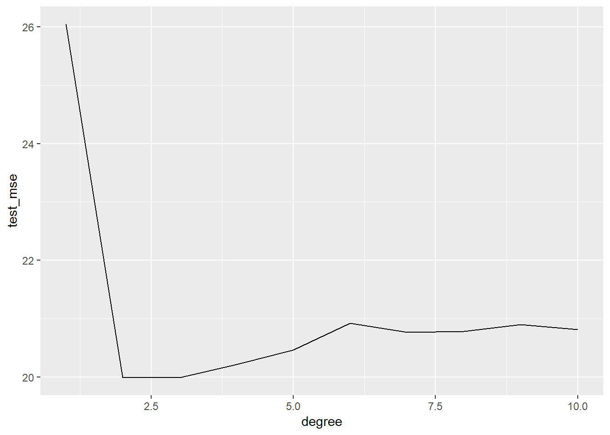
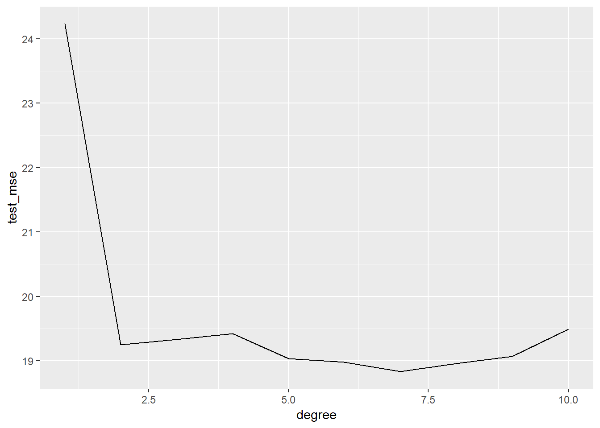
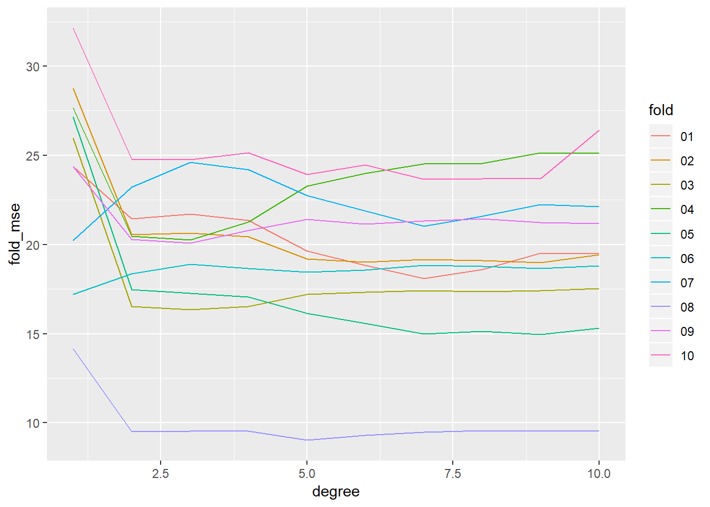
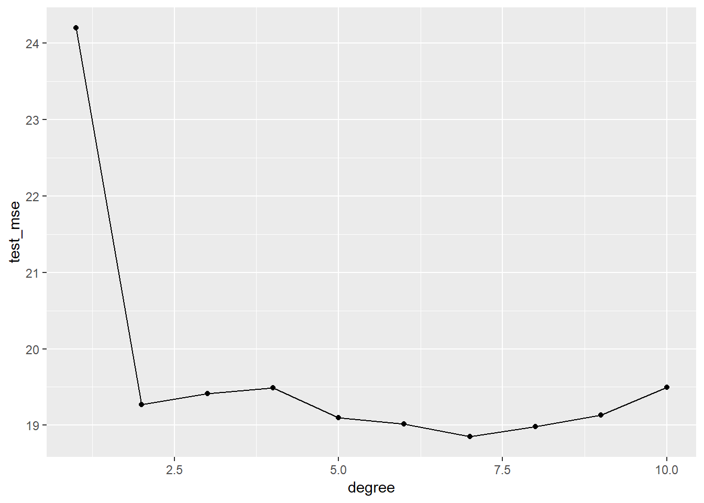
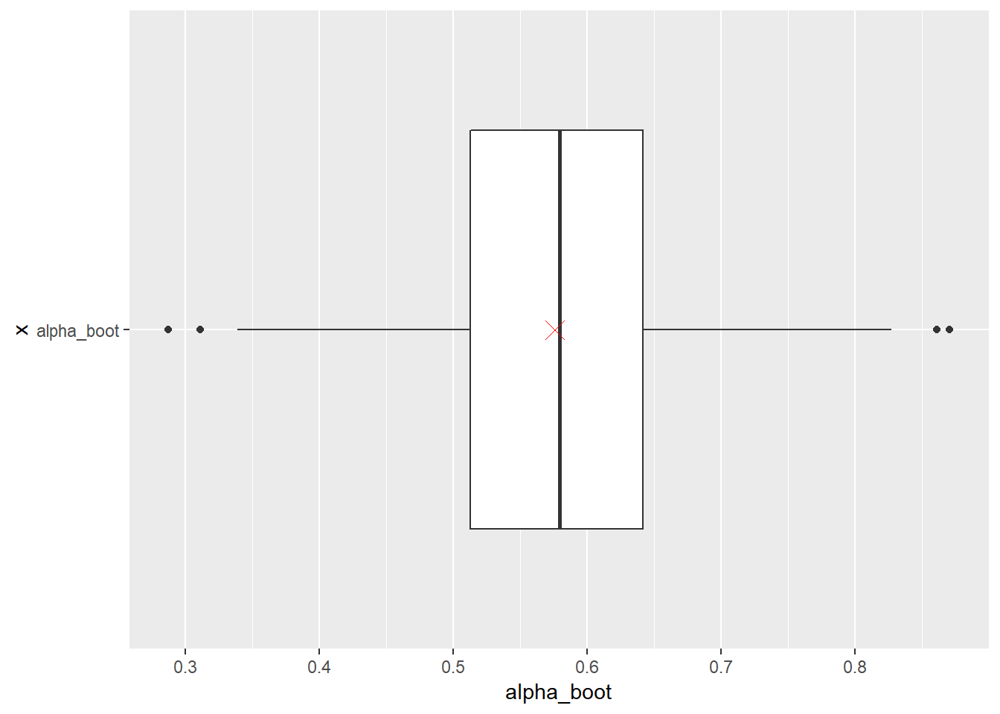
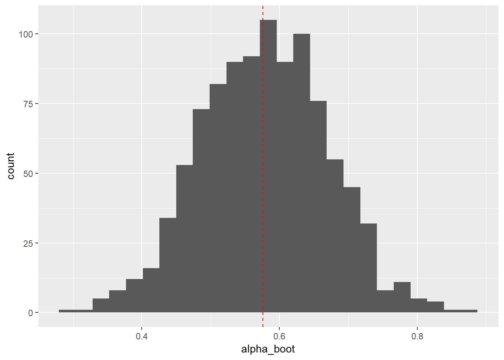
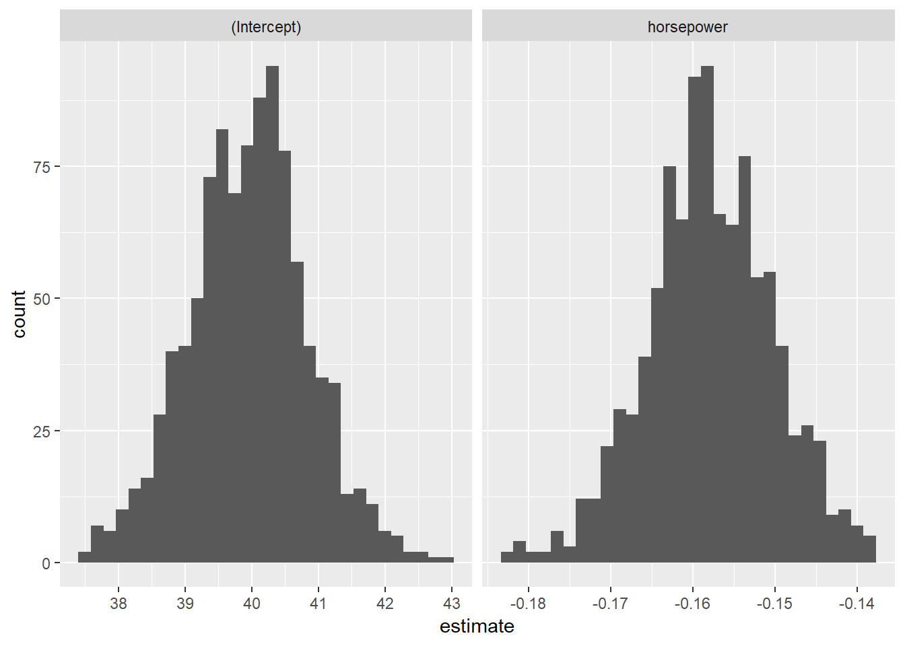
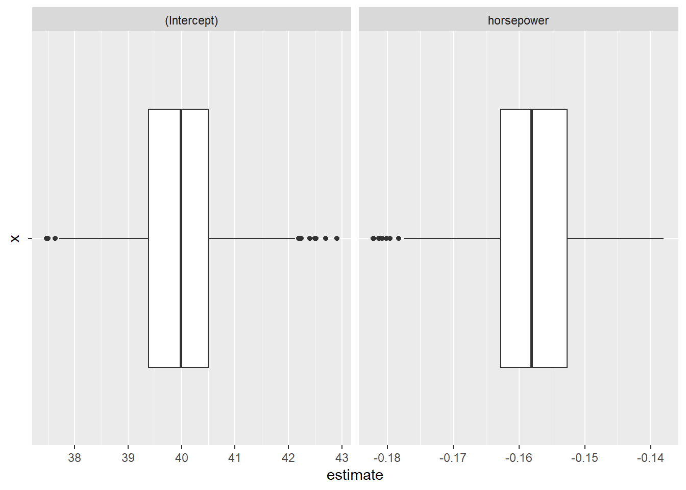

5 Lab: Cross-Validation and the Bootstrap
This is a modified version of the Lab: Cross-Validation and the Bootstrap section of chapter 5 from Introduction to Statistical Learning with Application in R. This version uses tidyverse techniques and methods that will allow for scalability and a more efficient data analytic pipeline.
We will need the packages loaded below.
# Load packages
library(tidyverse)
library(modelr)
library(janitor)
library(skimr)Whenever performing analyses or processes that include randomization or resampling it is considered best practice to set the seed of your software’s random number generator. This is done in R using set.seed(). This ensure the analyses and procedures being performed are reproducible. For instance, readers following along in the lab will be able to produce the precisely the same results as those produced in the lab. Provided they run all code in the lab in sequence from start to finish — cannot run code chucks out of order. Setting the seed should occur towards the top of an analytic script, say directly after loading necessary packages.
# Set seed
set.seed(27182) # Used digits from e5.1 Validation Set Approach
We explore the use of the validation set approach in order to estimate the test error rates that result from fitting various linear models on the Auto dataset. This dataset is from the ISLR library. Take a moment and inspect the codebook — ?ISLR::Auto. We will read in the data from the Auto.csv file and process do a little processing.
auto_dat <- read_csv("data/Auto.csv") %>%
clean_names()We begin by using the sample() function to split the set of observations sample() into two halves, by selecting a random subset of 196 observations out of the original 392 observations. We refer to these observations as the training set.
auto_validation <- tibble(train = auto_dat %>% sample_n(196) %>% list(),
test = auto_dat %>% setdiff(train) %>% list())Let’s keep it relatively simple and fit a simple linear regression using horsepower to predict mpg and polynomial regressions of up to degree 5 of horsepower to predict mpg.
# Setup tibble with model names and formulas
model_def <- tibble(degree = 1:10,
fmla = str_c("mpg ~ poly(horsepower, ", degree, ")"))
# Combine validation setup with model fitting info
auto_validation <- auto_validation %>%
crossing(model_def)
# Add model fits and assessment
auto_validation <- auto_validation %>%
mutate(model_fit = map2(fmla, train, lm),
test_mse = map2_dbl(model_fit, test, mse))auto_validation %>%
select(degree, test_mse) %>%
# arrange(test_mse) %>%
kable()| degree | test_mse |
|---|---|
| 1 | 26.04603 |
| 2 | 19.98592 |
| 3 | 19.98956 |
| 4 | 20.21181 |
| 5 | 20.46329 |
| 6 | 20.91796 |
| 7 | 20.76588 |
| 8 | 20.78421 |
| 9 | 20.89817 |
| 10 | 20.81535 |
auto_validation %>%
select(degree, test_mse) %>%
ggplot(aes(x = degree, y = test_mse)) +
geom_line()
5.2 Leave-One-Out-Cross Validation
auto_loocv <- auto_dat %>%
crossv_kfold(nrow(auto_dat), id = "fold")
auto_loocv <- auto_loocv %>%
crossing(model_def) %>%
mutate(model_fit = map2(fmla, train, lm),
fold_mse = map2_dbl(model_fit, test, mse))
auto_loocv %>%
group_by(degree) %>%
summarise(test_mse = mean(fold_mse))## # A tibble: 10 x 2
## degree test_mse
## <int> <dbl>
## 1 1 24.2
## 2 2 19.2
## 3 3 19.3
## 4 4 19.4
## 5 5 19.0
## 6 6 19.0
## 7 7 18.8
## 8 8 19.0
## 9 9 19.1
## 10 10 19.5auto_loocv %>%
group_by(degree) %>%
summarise(test_mse = mean(fold_mse)) %>%
ggplot(aes(x = degree, y = test_mse)) +
geom_line()
5.3 \(k\)-fold Cross-Validation
auto_10fold <- auto_dat %>%
crossv_kfold(10, id = "fold")
auto_10fold <- auto_10fold %>%
crossing(model_def) %>%
mutate(model_fit = map2(fmla, train, lm),
fold_mse = map2_dbl(model_fit, test, mse))
auto_10fold %>%
ggplot(aes(x = degree, y = fold_mse, color = fold)) +
geom_line() 
auto_10fold %>%
group_by(degree) %>%
summarize(test_mse = mean(fold_mse)) %>%
ggplot(aes(x = degree, y = test_mse)) +
geom_line() +
geom_point()
5.4 The Bootstrap
We will we using the Portfolio dataset from ISLR — see ?ISLR::Portfolio for details. We will load the dataset from the Portfolio.csv file.
portfolio_dat <- read_csv("data/Portfolio.csv") %>% clean_names()portfolio_dat %>%
skim()## Skim summary statistics
## n obs: 100
## n variables: 2
##
## -- Variable type:numeric ---------------------------------------------------------------------------
## variable missing complete n mean sd p0 p25 p50 p75 p100
## x 0 100 100 -0.077 1.06 -2.43 -0.89 -0.27 0.56 2.46
## y 0 100 100 -0.097 1.14 -2.73 -0.89 -0.23 0.81 2.57
## hist
## <U+2581><U+2583><U+2587><U+2587><U+2586><U+2583><U+2583><U+2582>
## <U+2581><U+2582><U+2586><U+2587><U+2583><U+2585><U+2583><U+2581>5.4.1 Estimating the Accuracy of a Statistic of Interest
# Statistic of interest
alpha_fn <- function(resample_obj){
resample_obj %>%
# turn resample object into dataset
as_tibble() %>%
summarise(alpha = (var(y)-cov(x,y))/(var(x)+var(y)-2*cov(x,y))) %>%
pull(alpha)
}
# Estimate on original data
original_est <- portfolio_dat %>%
alpha_fn()
original_est## [1] 0.5758321# create 1000 bootstrap estimates
portfolio_boot <- portfolio_dat %>%
bootstrap(1000, id = "boot_id") %>%
mutate(alpha_boot = map_dbl(strap, alpha_fn)) # Summary of bootstrap estimates
portfolio_boot %>%
select(alpha_boot) %>%
skim()## Skim summary statistics
## n obs: 1000
## n variables: 1
##
## -- Variable type:numeric ---------------------------------------------------------------------------
## variable missing complete n mean sd p0 p25 p50 p75 p100
## alpha_boot 0 1000 1000 0.58 0.092 0.29 0.51 0.58 0.64 0.87
## hist
## <U+2581><U+2581><U+2585><U+2587><U+2587><U+2585><U+2581><U+2581># Boxplot of bootstrap estimates with estimate from original data (red X)
portfolio_boot %>%
ggplot(aes(x = "alpha_boot" , y = alpha_boot)) +
geom_boxplot() +
geom_point(aes(x = "alpha_boot", y = original_est),
shape = 4, size = 4, color = "red") +
coord_flip() 
# Histogram of bootstrap estimates with estimate from original data (red dashed line)
portfolio_boot %>%
ggplot(aes(x = alpha_boot)) +
geom_histogram(bins = 25) +
geom_vline(aes(xintercept = original_est),
color = "red", linetype = "dashed")
# Bootstrap estimate of standard error for estimator
portfolio_boot %>%
summarise(est_boot = mean(alpha_boot),
est_se = sd(alpha_boot))## # A tibble: 1 x 2
## est_boot est_se
## <dbl> <dbl>
## 1 0.578 0.09215.4.2 Estimating the Accuracy of a Linear Regression Model
# 1000 Bootstraps, fit models, get parameter estimates
auto_boot <- auto_dat %>%
bootstrap(1000, id = "boot_id") %>%
mutate(model_fit = map(strap, lm, formula = mpg ~ horsepower),
mod_tidy = map(model_fit, broom::tidy))# Examine bootstrap coefficient estimates
auto_boot %>%
unnest(mod_tidy) %>%
group_by(term) %>%
select(term, estimate) %>%
skim() %>%
kable()## Skim summary statistics
## n obs: 2000
## n variables: 2
##
## Variable type: numeric
##
## term variable missing complete n mean sd p0 p25 p50 p75 p100 hist
## ------------- ---------- --------- ---------- ------ ------- -------- ------- ------- ------- ------- ------- ----------
## (Intercept) estimate 0 1000 1000 39.95 0.89 37.47 39.38 39.98 40.5 42.91 <U+2581><U+2582><U+2586><U+2587><U+2587><U+2583><U+2581><U+2581>
## horsepower estimate 0 1000 1000 -0.16 0.0077 -0.18 -0.16 -0.16 -0.15 -0.14 <U+2581><U+2581><U+2583><U+2586><U+2587><U+2586><U+2582><U+2581># Histogram of bootstrap coefficient estimates
auto_boot %>%
unnest(mod_tidy) %>%
ggplot(aes(x = estimate)) +
geom_histogram() +
facet_wrap(. ~ term, scale = "free_x")## `stat_bin()` using `bins = 30`. Pick better value with `binwidth`.
# Boxplot of bootstrap coefficient estimates
auto_boot %>%
unnest(mod_tidy) %>%
ggplot(aes(x = "", y = estimate)) +
geom_boxplot() +
facet_wrap(. ~ term, scale = "free_x") +
coord_flip()
# Estimates using original data (including SE)
auto_dat %>%
lm(mpg ~ horsepower, data = .) %>%
broom::tidy() %>%
select(-statistic, -p.value)## # A tibble: 2 x 3
## term estimate std.error
## <chr> <dbl> <dbl>
## 1 (Intercept) 39.9 0.717
## 2 horsepower -0.158 0.00645# Estimates using bootstrap
auto_boot %>%
unnest(mod_tidy) %>%
group_by(term) %>%
summarise(boot_est = mean(estimate),
est_se = sd(estimate))## # A tibble: 2 x 3
## term boot_est est_se
## <chr> <dbl> <dbl>
## 1 (Intercept) 40.0 0.888
## 2 horsepower -0.158 0.00770